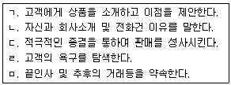
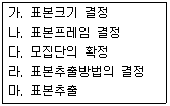
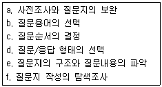
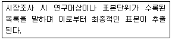
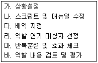
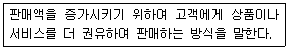
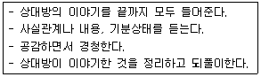
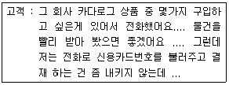

텔레마케팅관리사 (2004-08-08 기출문제)
1과목: 판매관리
1. CTI(Computer Telephony Integration)에 대한 설명 중 틀린 것은?
- 컴퓨터와 텔레포니(교환기, IVR/FAX, 전화기 및 관련 소프트웨어)가 서로 연결· 통합되도록 하는 정보기술과 이를 통해 업무에서 활용할 수 있는 솔루션을 의미한다.
- CTI는 모뎀과 통신 소프트웨어에서 이미 적용되고 있는 기술이다.
- 전화국선과 내선을 연결 처리한다.
- 통신 소프트웨어는 모뎀 드라이브를 통해 모뎀과 상호 동작하여 데이터 커뮤니케이션 작업을 수행할 수 있도록 해 주는 CTI 솔루션이다.
(정답률: 알수없음)

2. 포지셔닝(Positioning)에 관한 설명 중 틀린 것은?
- 포지셔닝이란 기업이 시장 세분화를 기초로 정해진 표적시장내에 고객들의 마음속에 시장분석, 고객분석 경쟁분석 등을 기초로 하여 전략적 위치를 계획하는 것이다.
- 포지셔닝 맵이란 소비자의 마음속에 내재해 있는 자사제품과 경쟁회사 제품들의 위치를 2차원 또는 3차원의 도면으로 작성한 것이다.
- 포지셔닝 전략의 수립 절차는 경쟁제품의 포지션 분석 → 자사 제품과 포지셔닝 개발 → 소비자 분석 및 경쟁자 확인 → 포지션의 확인 → 재 포지셔닝의 단계를 거친다.
- 포지셔닝 맵은 크게 제품 위주의 포지셔닝 맵과 소비자의 지각을 통해 작성하는 인지도가 있다.
(정답률: 알수없음)
3. Burn-out의 의미로 적절한 것은?
- 전화통화가 되지 않는 상태
- 고객과 전화 통화를 마친 후 상담원이 처리해야 할 업무
- 텔레마케터에게 있어 동기 부여가 현저하게 저하되어 있는 상태
- 전화만 갖춘 브로커로 많은 전화번호를 무작위로 추출하여 판매하는 상태
(정답률: 알수없음)
4. 고객을 세분화하는 목적이 아닌 것은?
- 고객 집단별 차별화된 마케팅의 전개
- 이탈고객의 허용을 통한 관리비용의 절감
- 고객과 기업간 우호적 관계 유지
- 고객관리 면에서의 경쟁우위 학보
(정답률: 알수없음)
5. CRM을 구현하기 위한 아웃바운드 텔레마케팅의 활용으로서 옳지 않은 것은?
- 우수고객에게 새로운 서비스를 홍보하기 위하여 전화를 한다.
- 고객의 불만사항을 접수하고 원인을 분석한다.
- A/S후 불편한 사항이 없는지 확인전화를 한다.
- 고객의 기념일에 사은품을 보내기 위해 고객정보를 확인하고자 전화를 한다.
(정답률: 알수없음)
6. 아웃바운드 텔레마케팅 상담 흐름을 올바르게 나열한 것은?

- ㄱ-ㄴ-ㄷ-ㄹ-ㅁ
- ㄴ-ㄹ-ㄱ-ㄷ-ㅁ
- ㄴ-ㄱ-ㄹ-ㄷ-ㅁ
- ㄴ-ㄷ-ㄹ-ㄱ-ㅁ
(정답률: 알수없음)
7. 데이터베이스를 구성하는 고객정보의 원천을 설명한 것으로 틀린것은?
- 내부고객정보 - 회사내부에 이미 보유하고 있는 정보
- 반응고객정보 - 판매를 목적으로 전문업체에 의해 만들어진 정보
- 외부고객정보 - 현재까지 기업과 별다른 관계를 가지고 있지 않는 고객정보
- 타기업의 고객정보 - 다른 기업이 보유한 고객정보
(정답률: 알수없음)
8. 데이터베이스 마케팅의 특징이 아닌 것은?
- 효율적인 데이터베이스 관리를 위한 전산화가 필요하다.
- 데이터는 고객마다 구축해 업데이트 하면서 확장해야 한다.
- 장기적인 릴레이션십(relationship)의 개발 및 축적이다.
- 기존고객만을 대상으로 하는 마케팅이다.
(정답률: 알수없음)
9. 고객 데이터베이스를 구축하기 위한 고객정보의 획득방법으로 바람직하지 않은 것은 ?
- 고객카드작성 정보
- 제휴된 신용카드 정보
- 외부데이터베이스 및 시장조사정보
- 흥신소를 통한 고객의 사생활정보
(정답률: 알수없음)
10. CRM(customer relationship management:고객관계관리)의 정의에 포함되지 않는 것은?
- 고객에 대한 정확한 이해
- 고객이 원하는 제품과 서비스의 지속적 제공
- 고객의 평생가치 극대화
- 고객의 노후보장
(정답률: 알수없음)
11. 데이터베이스 마케팅의 핵심사항이 아닌 것은?
- 브랜드 인지도 및 제고에 적합한 마케팅이다.
- 가능고객의 확인이 판매 전에 가능하다.
- 고객관계관리에 초점을 둔다.
- 고객에게 개별적으로 접근하여 설득할 수 있다.
(정답률: 알수없음)
12. 아웃바운드 텔레마케팅의 특성은?
- 고객이 기업으로 연락하는 것이다.
- 기업이 고객을 찾아 마케팅하는 것이다.
- 이벤트회사로 고객이 찾아가는 것이다.
- 고객불만을 적극적으로 해소하는 것이다.
(정답률: 알수없음)
13. 아웃바운드 텔레마케팅에서 잠재고객을 구매고객으로 전환시키는 방법으로 볼 수 없는 것은?
- 고객을 이해시키고 실질적 혜택부여
- 무조건 가격할인을 통한 유도
- 관심이 많은 고객을 집중적으로 설득
- 쌍방간 커뮤니케이션 강화
(정답률: 100%)
14. 아웃바운드 텔레마케팅에 대한 설명과 거리가 먼 것은?
- 대화대본이 중요하다.
- 적극적인 마케팅기법은 아니다.
- 제품지식이 중요하게 요구된다.
- 전화예절이 중요하게 요구된다.
(정답률: 알수없음)
15. Call Blending에 대한 설명으로 올바른 것은?
- 전화통화를 세팅한 후 이것을 모니터링하고 나서 끝 내는 것
- ACD내에서 걸려온 전화를 어디로 보내야 할 지에 관해 사용자가 정할 수 있는 선택 목록
- 컴퓨터 시스템에 연결된 교환대를 거쳐간 전화통화에 관한 정보
- 외부로 건 전화와 내부로 걸려온 전화 처리능력의 균형을 맞추려고 이들을 적절히 묶어 처리하는 것
(정답률: 알수없음)
16. 다이렉트마케팅의 정의로 틀린 것은?
- 여러 광고매체의 사용에 따른 지출규모와 마케팅 결과를 측정하고 분석할 수 있다.
- 전화, 우편, 방문판매, 인터넷쇼핑몰 등 어느 곳에서나 거래가 가능하므로 광범위하고 풍부한 잠재고객 확보가 가능하다.
- 동시에 다수의 잠재고객 또는 소비자를 상대하는 단방향 마케팅이므로 판매촉진이 신속하게 이루어진다.
- 고객 속성 정보와 거래정보, 고객서열과 고객등급 등 다양한 데이터베이스를 축적할 수 있다.
(정답률: 알수없음)
17. Predictive Dialing에 대한 설명이 아닌 것은?
- 컴퓨터를 이용해 전화를 받도록 하거나 전화를 하도록 하는 등 모든 처리를 자동적으로 해결한다.
- 상담원은 전화상의 말소리를 듣거나 또는 다음의 전화를 선택할 겨를도 없이 지금 처리하고 있는 통화가 끝나면 곧바로 다음전화로 연결되어 그 전화를 받게 된다.
- 상담원의 통화가 끝나는 시기를 예측하여 다이얼링한 후 응답고객에게 연결시켜 주는 기능이다.
- 전화발신을 상담원이 직접 모니터상에서 조회하고 처리하므로 기존에 수동으로 하던 업무를 자동으로 처리하는 효과가 있다.
(정답률: 알수없음)
18. 용어에 대한 설명으로 틀린 것은?
- Call Accounting - 콜기록 기능을 말하며, 수· 발신날짜, 시간, 다이얼 번호, 통화시간 등에 의해 통화 내역을 분석하는데 사용되는 장비
- Call Back - 고객이 상담원과 통화를 못한 경우, 고객이 전화번호를 예약해 놓으면 예약된 시간에 전화를 걸어 고객의 업무를 처리하는 것
- Call Data - 컴퓨터시스템에 연결된 교환대를 거처간 전화통화에 관한 정보
- Call Log - 자동호 분배시스템(ACD) 내에서 걸려온 전화를 어디로 보내야 할 지에 관해 사용자가 정할 수 있는 선택목록
(정답률: 알수없음)
19. 축적된 고객관련 데이터에 숨겨진 규칙이나 패턴을 찾아 내는 것을 무엇이라 하는가?
- DBMS
- 데이터 마이닝
- 필터링
- CRM
(정답률: 알수없음)
20. 용어에 대한 설명이 틀린 것은?
- 평균통화시간 - 모든 상담원이 모든 호를 상담 하는 데 소요되는 평균시간
- 통화 후 작업시간 - 고객과 통화를 끝낸 후 상담원이 업무를 처리하는 시간
- 콜 대기시간 - 고객 콜 대기시간과 연결시간을 더한시간
- 평균응답 속도 - 일정시간 동안 모든 상담원이 모든호에 응답하는데 소요하는 평균시간
(정답률: 알수없음)
21. 상담원 통화가 끝나는 시간을 예측하여 고객에게 전화 걸어서 응답된 고객만을 연결시켜주는 기능은?
- Preview Dialing
- Progressive Dialing
- Predictive Dialing
- Proactive Dialing
(정답률: 알수없음)
22. 고객생애가치(Life Time Value)와 가장 관계가 깊은 것은 무엇인가?
- Renewal(갱신)
- CRM(고객관계관리)
- UP-Sale(고가 판매)
- Cross-Sale(교차 판매)
(정답률: 알수없음)
23. RFM(Recency, Frequency, Moneytary)모델에 대한 설명으로 옳지 않는 것은?
- RFM 분석을 위해서는 고객 Database의 축적과 가공이 필요하다.
- R은 최근 구매일, F는 구매 빈도, M은 구입 총 금액을 말한다.
- RFM 포인트에서 가장 중요한 것은 F 요소이다.
- RFM 은 마케팅 담당자의 목적에 따라 각각 임의로 가중치를 부여 할 수 있다.
(정답률: 알수없음)
24. 고객 시장 세분화에 대한 가장 올바른 설명은?
- 고객을 시장, 마트, 백화점 등 판매 채널별로 분류하는 방법론이다.
- 고객을 소득 수준별, 소비 수준별로 분류하는 방법이다.
- 고객을 지역별로 분류하는 방법이다.
- 고객들이 기업의 마케팅 활동에 대한 반응과 선호분석에 의한 동질적인 고객 분류이다.
(정답률: 알수없음)
25. 가장 일반적인 소비자의 반응 순서는?
- 흥미유발(I) → 주목(A) → 욕구(D) → 행동(A)
- 주목(A) → 흥미유발(I) → 욕구(D) → 행동(A)
- 욕구(D) → 흥미유발(I) → 주목(A) → 행동(A)
- 주목(A) → 욕구(D) → 흥미유발(I) → 행동(A)
(정답률: 알수없음)
2과목: 시장조사
26. 해당연구에 대한 설명 중 적절하지 않은 것은?
- 탐색연구 : 연구대상의 적합성을 판단하기 위한 연구
- 기술연구 : 현상에 대한 특성파악을 위한 연구
- 설명연구 : 변인들의 인과관계를 설명하는 연구
- 예측연구 : 표본의 대표성을 평가하는 연구
(정답률: 알수없음)
27. 전화번호부를 이용하여 확률 표본 추출 시 가장 쉽게 적용할 수 있는 추출법은 ?
- 체계적 추출법(systematic sampling)
- 층화 추출법(stratified sampling)
- 지역 추출법(area sampling)
- 할당 추출법(quota sampling)
(정답률: 알수없음)
28. 전화면접을 수행하는 면접조사자가 질문을 할 때 지켜야할 규칙 중 올바른 것은?
- 별도의 지시가 없는한 모든 질문에 답을 얻어야한다.
- 면접의 원활한 진행을 위해서는 설명을 추가해도 좋다.
- 응답자가 쉽게 답하도록 미리 수용가능한 응답을 지정해 준다.
- 응답을 잘 받기위해 질문의 순서는 상황에 따라 조정해도 좋다.
(정답률: 알수없음)
29. 다음 표본설계과정을 순서대로 올바로 나열한 것은?

- 다-나-라-마-가
- 다-라-나-가-마
- 다-가-나-라-마
- 다-나-라-가-마
(정답률: 알수없음)
30. 모집단에 관한 설명 중 바르지 않은 것은?
- 모집단의 효과적인 형태설정을 위해서는 전화 걸 대상 설정, 응답자 역할의 구체화, 직업 등을 고려해서 적용해야 한다.
- 모집단은 조사자가 추론하고자 하는 모든 자료들의 집합을 말한다.
- 모집단은 자료의 흩어진 정도를 나타내지 않는다.
- 전화조사시 조사원이 어떤 사람들에게 전화할 것인가를 추출하는 기초자료이다.
(정답률: 알수없음)
31. 시장조사를 활용한 활동으로 볼 수 있는 것은?
- 회사의 매출을 파악하기 위하여 회계자료를 분석한다
- 회사의 규모를 파악하기 위하여 직원현황을 분석한다
- 새로 만든 다리의 이름을 짓기 위해 주민들에게 다리 이름을 공모한다.
- 광고의 인지도를 파악하기 위하여 전화조사를 실시한다.
(정답률: 알수없음)
32. 조사보고서에 작성 목적으로 적당치 않은 것은?
- 조사자와의 의사소통
- 통제수단
- 타당성 검증
- 결과 활용
(정답률: 알수없음)
33. 기업환경분석에 해당하지 않는 것은?
- 자사분석
- 산업분석
- 경쟁분석
- 가격분석
(정답률: 알수없음)
34. 시장조사를 실시하려고 할 때 그 절차가 바르게 된 것은?
- 문제의 제기 - 시장조사설계 - 자료수집 - 자료분석, 해석 및 이용 - 보고서 작성
- 문제의 제기 - 자료의 수집 - 시장조사설계 - 자료분석, 해석 및 이용 - 보고서 작성
- 문제의 제기 - 시장조사설계 - 자료분석, 해석 및 이용 - 자료수집 - 보고서 작성
- 문제의 제기 - 자료의 수집 - 자료분석, 해석 및 이용 - 보고서 작성 - 자료수집
(정답률: 알수없음)
35. 전화면접 시 면접원이 지켜야 할 예의가 아닌 것은?
- 가능한 휴일에 전화하지 않는다.
- 자세하고 상세하게 질문한다.
- 발신자의 신분을 정확히 밝힌다.
- 전화한 목적과 소요시간을 안내한다.
(정답률: 알수없음)
36. 전화조사의 장점에 관한 설명으로 잘못된 것은?
- 개별면접 방법보다 시간과 비용면에서 경제적이다.
- 심층 조사가 가능하여 자료수집이 용이하다.
- 응답자들이 면접자와의 대면적 조사방법에서 느끼는 불편감을 제거할 수 있다.
- 조사자의 질문방법에 따라 조사결과에 영향을 미쳐 서로 다른 결과를 가져올 위험이 있다.
(정답률: 알수없음)
37. 마케팅 리서치의 대한 설명 중 옳지 않은 것은?
- 마케팅 활동과 관련성이 있어야 한다.
- 미래의 정보를 수집 해야 한다.
- 신뢰할 수 있어야 한다.
- 정확하고 타당성이 있어야 한다.
(정답률: 알수없음)
38. 용어에 대한 설명 중 옳지 않은 것은?
- 조사의 전체 대상을 모집단 이라고 한다.
- 모집단의 특성을 그대로 살리면서 소수의 적절한 수를 뽑는 과정을 표집 이라고 한다.
- 표본추출에 의해 선정된 요소들의 집단을 표집단 이라고 한다.
- 모집단으로부터 추정되는 값을 모수치 라고 한다.
(정답률: 알수없음)
39. 탐색조사의 종류가 아닌 것은?
- 문헌조사
- 전문가조사
- FGI조사
- 사례조사
(정답률: 알수없음)
40. 가설에 대한 특성을 설명한 것 중 옳지 않은 것은?
- 문제해결의 기능이 있어야 한다.
- 확률적 속성을 갖는다.
- 경험적 검증이 가능해야 한다.
- 추상적 개념을 포함해야 한다.
(정답률: 알수없음)
41. 횡단조사의 구매 관련 자료에 대한 조사 항목으로 거리가 먼 것은?
- 고객 개인 정보
- 선호상표
- 구매의사
- 상표 및 광고 인지도
(정답률: 37%)
42. 종단조사에 대한 설명이 올바른 것은?
- 시간 간격을 두고 반복적 조사를 통한 마케팅 변수에 대한 반응 측정
- 기온에 민감한 남북을 위도별로 분류하여 각 지역별로 선호되는 상품에 대한 반응요소 측정
- 소득수준에 따른 모집단을 분류 선호되거나 이용되는 상품을 가격대별, 상품군 별로 분석한 자료
- 어떠한 시점에서의 소비자의 구매형태를 측정하여 시장의 전반적 상황을 조사
(정답률: 알수없음)
43. 전화 조사 후 불만족스러운 응답자료를 해결하기 위한 방법으로 적합하지 않은 것은?
- 현장으로 다시 반려하여 재조사 하도록 한다.
- 결측치(missing value)로 처리한다.
- 표본의 크기가 커서 폐기해도 관계가 없는 경우 설문지를 폐기한다.
- 응답자격이 없는 응답자가 응답한 경우라도 내용이 충실하면 표본으로 한다.
(정답률: 알수없음)
44. 설문지를 작성할 때 각 항목별 응답형태를 결정한 후에는 보다 구체적으로 각 질문항목을 완성하여야 하는데 이때 반드시 지켜져야 할 점이 아닌 것은?
- 가능한 한 쉽고 명료한 단어를 이용한다.
- 응답항목들간의 내용이 중복돼서는 안된다.
- 가능한 한 하나의 항목으로 두 가지 내용을 질문한다
- 대답을 유도하는 질문을 해서는 안 된다.
(정답률: 알수없음)
45. 응답 형태 중 코딩이 어려운 것은?
- 다지선택형
- 양자택일형
- 자유응답형
- 등급평가형
(정답률: 알수없음)
46. 조사를 끝내고 채택된 설문지에 대해 각 항목의 응답이 정확한 것인가를 파악하는 과정을 무엇이라고 하는가?
- 코딩
- 편집
- 펀칭
- 코딩가이드
(정답률: 알수없음)
47. 설문지의 구성은 자료 수집을 위한 질문항목 체계화의 정도와 질문형식에 따라 4가지로 나눌수 있는데, 그 중 개인면접과 같은 탐색적 조사방법으로 널리 쓰이는 것은?
- 체계적-공개적 설문지
- 비체계적-공개적 설문지
- 비체계적-비공개적 설문지
- 체계적-비공개적 설문지
(정답률: 알수없음)
48. 질문지 작성의 단계를 바르게 나열한 것은?

- a-b-c-d-e-f
- d-b-c-a-e-f
- f-e-d-c-b-a
- c-d-a-b-e-f
(정답률: 알수없음)
49. 조사자는 시장조사를 설계할 때 다양한 방법을 고려할 수 있다. 조사방법에 따라 1차 자료와 2차 자료로 분류할 수 있는데 2차 자료에 해당하는 것은?
- 신디케이트 자료(syndicated data)
- 실사자료(survey data)
- 원 자료(raw data)
- 현장자료(field data)
(정답률: 알수없음)
50. 다음 설명은 무엇인가?

- 표본프레임
- 임의표본
- 확률표본
- 통제집단
(정답률: 알수없음)
3과목: 텔레마케팅관리
51. 리더의 특성이 아닌 것은?
- 솔직하고 즉각적인 감정 표현
- 역할에 대한 이해
- 행동에 대한 이해
- 성과에 대한 공정한 평가
(정답률: 알수없음)
52. A 생명보험 회사는 주요 5대 일간지에 저렴한 보험료의 상해 보험 상품을 광고하고 고객들이 무료 전화를 이용하여 전화를 걸어오면, 보험 가입을 받고 상품을 판매하고 있다. 이는 어떤 형태의 텔레마케팅으로 볼 수 있는가?
- 인바운드 (Inbound), 기업 대 소비자 (B to C)
- 인바운드 (Inbound), 기업 대 기업 (B to B)
- 아웃바운드 (Outbound), 기업 대 소비자 (B to C)
- 아웃바운드 (Outbound), 기업 대 기업 (B to B)
(정답률: 알수없음)
53. 모니터링의 핵심성공요소가 아닌 것은?
- 모니터링에 대한 공감대 형성
- 합리적 평가표 및 목표설정
- 주관적 평가 실시
- 코칭 및 사후점검
(정답률: 알수없음)
54. SMART성과 목표 설정 항목중 S에 해당하는 내용은?
- Specific(명확성)
- Special(특별성)
- Speed(신속성)
- Social(사회성)
(정답률: 65%)
55. 콜센터의 생산성 향상을 위한 방법으로 옳은 것은?
- 언제나 기본 스크립트를 지속적으로 사용한다.
- 모니터링은 내부에서만 실시한다.
- 개인별, 팀별로 Role Playing과 코칭을 한다.
- 관리, 행정적 업무처리 절차를 강조한다.
(정답률: 알수없음)
56. 텔레마케팅 교육을 위해서는 역할연기(Role-Playing)가 효과적인데, 그 실시 순서가 맞는 것은?

- 가-나-다-라-마-바
- 가-나-라-다-바-마
- 가-다-라-나-마-바
- 가-라-다-바-나-마
(정답률: 알수없음)
57. 텔레마케팅이라고 보기 힘든 것은?
- 이동 통신사에서 전화를 통해 새 상품에 대한 고객 반응을 조사하는 행위
- 카타로그 쇼핑 업체에서 상품소개 카타로그를 우편으로 보내서 우편 주문 받아 판매하는 행위
- 여행사에서 Fax를 이용하여 신 여행 상품을 소개하는 행위
- 백화점에서 생일 고객에게 축하 전화 하는 행위
(정답률: 알수없음)
58. 콜센터를 구성하는 시스템의 기능 중에 착신하는 콜을 텔레커뮤니케이터에게 균등하게 나누어주고 통화상황에 대한 데이터들을 출력시키는 기능을 뜻하는 것은?
- RDD(Random Digit Dialing)
- ACD(Automatic Call Distribution)
- DCD(Database Computer Distribution)
- CAD(Call Acouting Dialing)
(정답률: 알수없음)
59. 걸려온 모든 전화 중 텔레마케터와 고객이 연결이 된 통화를 의미하는 것은?
- 인입호
- 응답호
- 포기호
- 상담호
(정답률: 알수없음)
60. 텔레마케터의 주요 업무가 아닌 것은?
- 상품홍보 및 판촉 활동
- 고객관리
- 정보수집과 자료정리
- 방문판매
(정답률: 알수없음)
61. 텔레마케팅을 수행하는 아웃바운드 기본 스크립트 구성 체계로 순서가 바른 것은?
- 상대방 확인 - 자기소개 및 첫인사 - 전화건 목적 전달 - 상품, 서비스 제안 - 정보수집 및 니즈탐색 - 종결
- 상대방확인 - 전화건 목적 전달 - 자기소개 및 첫인사 - 정보수집 및 니즈탐색 - 상품, 서비스 제안 - 종결
- 자기소개 및 첫인사 - 상대방확인 - 전화건 목적 전달 - 정보 수집 및 니즈 탐색 - 상품, 서비스 제안 - 종결
- 자기소개 및 첫인사 - 전화건 목적 전달 - 상대방확인 - 상품, 서비스 제안 - 정보수집 및 니즈탐색 - 종결
(정답률: 알수없음)
62. 통신판매의 접수, 각종 불만사항 대응 등을 주된 업무로 하는 텔레마케팅은?
- 인바운드 텔레마케팅
- 아웃바운드 텔레마케팅
- 산업체(B to B) 텔레마케팅
- 사내(In-House) 텔레마케팅
(정답률: 알수없음)
63. 텔레마케팅 특성으로 올바르지 않은 것은?
- 시간, 공간, 거리의 장벽을 극복한다.
- 기업을 정보창조 조직으로 변모시킨다.
- 고객의 현재가치를 존중한다.
- 구성요소가 유기적으로 결합된 시스템에 의해 움직인다.
(정답률: 알수없음)
64. 성공하는 텔레마케팅의 조직 특성으로 옳지 않은 것은?
- 공정한 성과 평가 및 보상이 이루어진다.
- 역할별 목표와 책임이 분명하다.
- 인력개발을 위한 교육프로그램이 마련되어 있다.
- 생상성 향상을 위해 내부 커뮤니케이션은 최대한 제한 되어 있다.
(정답률: 알수없음)
65. 고객 콜센터의 효율적 운영방안에 대한 설명으로 적합하지 않은 것은?
- 고객상담을 종합적으로 처리할 수 있는 전문인력을 배치한다.
- 고객이 요구하는 사항은 무엇이든지 원스톱(onestop) 으로 처리하는 것을 지향한다.
- 고객의 특수한 요구 발생 시 스스로 판단하여 처리하도록 한다.
- 고객위주의 상담 스크립트를 개발하고 상담내용을 데이터베이스화 하여 경영활동에 반영한다.
(정답률: 알수없음)
66. 다음 설명이 의미하는 것은?

- Up-Selling
- Cross-Selling
- List Screening
- List Cleaning
(정답률: 알수없음)
67. 콜센터의 성과관리 방법 중 적당하지 않은 것은?
- 매일, 매주, 매월 등의 분명하며 도달 가능한 목표를 수립한다.
- 중간 점검을 통해 성과향상을 위한 지원요소와 방해 요소를 분석한다.
- 성과결과에 대한 공정한 평가가 이루어져야 한다.
- 보상은 우수 텔레마케터에게만 집중하는 것이 바람직하다.
(정답률: 알수없음)
68. 신입 텔레마케터의 교육과정으로 부적합한 것은?
- 업무지식
- 회사 전반 오리엔테이션
- 커뮤니케이션 스킬
- 콜분석 및 예측
(정답률: 알수없음)
69. 콜센타 조직의 특성이 아닌 것은?
- 고객지향적 조직이다.
- 정보와 커뮤니케이션을 매개로 하는 조직이다.
- 고객과 간접적으로 접촉하는 조직이다.
- 상황의 다양성, 집중성, 즉시성을 요구하는 대응조직이다.
(정답률: 알수없음)
70. 콜센터에서 QAA의 역할로서 가장 바람직한 것은?
- 텔레마케터의 통화품질을 평가하는 일
- 텔레마케터의 통화품질을 관리하는 일
- 텔레마케터의 통화품질을 향상을 도와주는 일
- 텔레마케터의 통화품질을 감독하는 일
(정답률: 알수없음)
71. 텔레마케팅 조직구성원의 역할이 잘못 연결된 것은?
- 교육담당자 - 텔레마케터의 경력개발을 위한 교육 예산을 책정한다.
- 모니터링담당자 - 텔레마케터가 고객과 통화한 내용을 분석한다.
- 시스템담당자 - 텔레마케터가 효율적으로 업무를 할 수 있는 근무환경을 조성한다.
- 수퍼바이저 - 텔레마케터의 스케쥴을 관리한다.
(정답률: 알수없음)
72. 콜센터의 역할 및 기능과 거리가 먼 것은?
- 비용절감
- 수익증대
- 고객정보 분산
- 고객관리
(정답률: 알수없음)
73. 텔레마케팅 판매의 연속성이 바르게 나열된 것은?
- 주문접수-고객서비스-계약갱신-계절판매
- 주문접수-계절판매-계약갱신-고객서비스
- 주문접수-계약갱신-계절판매-판매리드선정
- 주문접수-계절판매-판매리드선정-계약갱신
(정답률: 알수없음)
74. 교육의 효과를 측정하는데 있어서 가장 바람직한 방법은?
- 사전평가
- 중간평가
- 사후평가
- 추수평가
(정답률: 알수없음)
75. 콜센터 시스템의 구성요소에 대한 설명으로 옳은 것은?
- 콜센터는 CTI를 통해 교환기로 전화회선을 수용한다.
- DB서버는 교환기에 연결되는 모든 콜에 대해 데이터를 저장하고 관리한다.
- 다이얼러 모듈은 인바운드 서비스를 자동처리하는 시스템이다.
- ARS는 적정 상담원에게 자동으로 전화를 배분하는 역할을 한다.
(정답률: 알수없음)
4과목: 고객응대
76. 텔레마케팅에서 언어표현은 상대방에 대한 인격을 존중하는 마음을 전하는 도구이기에 매우 중요하다고 할 수 있다. 가장 효과적인 단어선택이라고 볼 수 없는 것은?
- 고객에게 확신을 줄 수 있는 긍정적인 단어
- 고객과 공감대를 형성할 수 있는 사투리
- 고객이 받을 수 있는 이점을 위주로 한 단어
- 칭찬,감사,기쁨을 표현할 수 있는 말
(정답률: 알수없음)
77. 텔레마케팅에서의 경청방법에 대한 설명으로 옳은 것은?
- 생산적인 경청자세는 선택적 경청이 매우 중요하다.
- 효과적인 경청자세는 고객에 대한 배려가 요구된다.
- 생산적 경청을 하기 위해서는 고객에게 어떠한 질문도 해서는 안된다.
- 효과적 경청은 고객에 대한 고정관념과 선입견이 있을 때 더욱 효과적이다.
(정답률: 알수없음)
78. 전화를 다른 사람에게 돌려주어야 하는 경우 취해야 할 행동으로 옳지 못한 행동은?
- 전화를 다른 사람에게 돌려야 하는 이유와 받을 사람이 누구인지 말해준다.
- 전화를 받을 사람에게 전화를 돌려도 괜찮은지 물어 본다.
- 전화를 돌려준 후 신속히 끊는다.
- 전화를 돌려 받은 사람에게 전화를 건 사람의 이름과 용건을 말해준다.
(정답률: 알수없음)
79. 고객과의 상담과정에서 재진술의 목적 또는 효과 라고 할수 없는 것은?
- 재진술을 통해 고객의 문제 또는 욕구를 명확하게 이해할 수 있다.
- 텔레마케터가 재진술함으로써 고객은 더 이상 자신의 문제나 욕구를 설명할 필요가 없게 된다.
- 고객의 이야기를 적극적으로 듣고 있다는 신뢰감을 줄 수 있다.
- 재진술 과정을 통해 텔레마케터가 잘못 이해했던 부분을 발견할 수 있다.
(정답률: 알수없음)
80. 효과적인 고객응대를 위해 작성된 대화 대본은 무엇인가?
- 교육 매뉴얼
- 스크립트
- 데이터베이스
- QA 평가쉬트
(정답률: 90%)
81. 전화로 고객 응대시 고객을 화나게 하는 응대표현이 아닌것은?
- 회사 방침이 아닙니다.
- 제 임무가 아닙니다.
- 저에게는 그런 권한이 없습니다.
- 잠시 기다려 주시면 즉시 처리해 드리겠습니다.
(정답률: 알수없음)
82. 인바운드 텔레마케팅과 관련된 내용의 설명 중 옳지 않은 것은?
- 첫인사 - 전화벨이 3번 울리기 전에 받아야 하고 인사말, 소속, 성명을 정확히 밝힌다.
- 불만처리 - 고객의 불만사항을 적극적으로 경청하고 진심으로 사과하고 불만에 대한 고객입장을 공감해야 한다.
- 끝인사 - 끝내기 언어를 잘 활용하여야 하고 고객이 끊는 것을 확인하고 2~3초 후에 수화기를 내려 놓는 다.
- 용건처리 - 고객의 요구를 가능한 빨리 파악하여 고객이 요구를 다 말하기 전에 신속히 처리한다.
(정답률: 알수없음)
83. 까다로운 클레임 처리기법의 설명으로 옳지 않는 것은?
- 고객에게 정중하게 사과하기
- 고객과 함께 협력하여 문제 해결하기
- 회사의 입장을 정당화 할 수 있는 논리를 제시하기
- 고객에게 도움이 될 수 있는 최선의 대안 찾기
(정답률: 알수없음)
84. 고객상담시 공감대를 형성하는 방법으로 적절하지 않은 것은?
- 공통적인 화제로 자연스럽게 대화한다.
- 인사는 격식에 따라서 위엄있게 한다.
- 고객을 진심으로 칭찬한다.
- 고객의 신분에 맞는 존칭어를 구사한다.
(정답률: 알수없음)
85. 고객에게 제품 또는 서비스를 설명하는 방법으로 옳지 않은 것은?
- 고객이 가장 관심을 갖고 있는 부분을 파악하고 집중하는 것이 필요하다.
- 자신의 업무적 지식을 과시하는 듯한 대화를 통하여 관계를 불편하게 해서는 안된다.
- 고객의 반응과 관계없이 한마디, 한마디를 정확하게 포인트만을 전달한다.
- 요점을 간결하게 전달하여 시간적 낭비를 줄인다.
(정답률: 80%)
86. 텔레마케팅을 통한 고객응대의 특성과 관련한 설명으로 옳지 않은 것은?
- 상대방의 얼굴을 볼 수 없어 청각에 절대적으로 의존하게 되므로 더욱 세심한 주의가 요구된다.
- 상담시에는 텔레마케터와 고객 모두 통화 내용에만 집중하므로 다른 소음 등의 전달여부에는 별도의 주의가 필요 없다.
- 고객은 시간과 장소를 가리지 않고 전화를 하므로 언제든지 이를 수용할 수 있는 자세를 갖추어야 한다.
- 고객의 시간과 경비를 배려하기 위해 정확하고 간결하게 정보를 전달한다.
(정답률: 알수없음)
87. 전화를 통한 고객 응대의 특징이라 볼 수 없는 것은 ?
- 쌍방 커뮤니케이션 이다.
- 고객에게 시각적인 요소를 제공할 수 있다.
- 통화의 목적이나 또는 통화 상대에 따라 적절하게 응대하여야 한다.
- 피드백이 즉각적이고 직접적으로 나타난다.
(정답률: 알수없음)
88. 고객 문의에 대한 해결 방법으로 가장 적절한 것은?
- 고객보다는 회사의 입장과 나를 먼저 생각한다.
- 시간을 끌어 고객이 포기하도록 한다.
- 정확한 고객요구를 먼저 파악한다.
- 사내 규정만을 고객에게 정확하게 전달한다.
(정답률: 알수없음)
89. 인바운드 고객상담을 위해 기본적으로 준비해야할 것이 아닌 것은?
- 스크립트
- 콜 체크시트
- 응대기록표
- 문답집
(정답률: 알수없음)
90. 다음은 어떠한 고객에 대한 경청태도의 공통점인가?

- 성격이 급한 고객
- 불만있는 고객
- 수다쟁이형 고객
- 만족하는 고객
(정답률: 알수없음)
91. 다음 고객표현에 대한 상담원의 응대화법 중 가장 적절한 것은?

- 카드 결재가 가장 빠릅니디만 내키지 않으시면 온라인으로 송금을 해주시거나 직접 방문하셔서 구입하시는 방법도 있습니다.
- 다른 방법은 전화주문 만큼 빠르지 않습니다. 카드결재를 하셔야 빨리 상품을 받으실 수 있으니 카드결재를 하십시요.
- 요즈음은 거의 모든 고객들이 전화로 신용카드번호를 불러주십니다. 문제없습니다.
- 그러면 좀 더 생각해 보시고 다시 전화주시기 바랍니다.
(정답률: 알수없음)
92. 인바운드 상담의 흐름으로 가장 적절한 것은?
- 첫인사 → 경청 → 동감 → 고객니즈(Needs)파악 → 문제해결 → 요약
- 첫인사 → 고객니즈(Needs)파악 → 동감 → 경청 → 문제해결 → 요약
- 첫인사 → 동감 → 고객니즈(Needs)파악 → 경청 → 문제해결 → 요약
- 첫인사 → 경청 → 고객니즈(Needs)파악 → 동감 → 문제해결 → 요약
(정답률: 20%)
93. 텔레마케터가 전화응대시 두려움을 갖는 이유가 아닌것은?
- 외모에 대한 컴플렉스
- 상담 기술 능력에 대한 자신감 결여
- 상품, 서비스 지식 부족
- 거절에 대한 불안감
(정답률: 알수없음)
94. 고객을 잘 관리하기 위하여 필요한 단계를 순서대로 바르게 나열한 것은 ?
- 고객확보 - 고객유지 - 고객고정화
- 고객유지 - 고객확보 - 고객고정화
- 고객고정화 - 고객유지 - 고객확보
- 고객유지 - 고객고정화 - 고객확보
(정답률: 알수없음)
95. 자사 제품(서비스)에 대한 구매의사를 알수 없는 고객을 무엇이라 하는가?
- 구매용의자(suspect)
- 구매가능자(prospect)
- 최초구매자(first time customer)
- 반복구매자(repeat customer)
(정답률: 알수없음)
96. 듣기의 일반적인 과정이 순서대로 나열된 것은?
- 응답-듣기-해석-평가
- 듣기-해석-평가-응답
- 듣기-평가-응답-해석
- 응답-듣기-평가-해석
(정답률: 알수없음)
97. 고객응대 시 필요한 지식과 거리가 먼 것은?
- 고객의 구매심리 및 고객시장에 관한 지식
- 제품 및 서비스에 관한 지식
- 통신시스템에 대한 전문적 지식
- 생산, 유통 과정과 품질에 관한 지식
(정답률: 알수없음)
98. 고객응대의 의미에 해당되지 않는 것은?
- 고객과의 1:1 의사소통이다.
- 대화예절이 수반된다.
- 응대의 신뢰성과 전문성이 요구된다.
- 응대목적이 필요치 않다.
(정답률: 알수없음)
99. 텔레마케터가 고객의 욕구를 정확히 파악하고 고객의 문제를 신속하게 해결하기 위한 방법으로 적합한 것은?
- 고객이 사용하는 사투리, 속어 등을 사용함으로써 보다 친근하고 신속하게 응대한다.
- 고객의 욕구를 정확히 파악하기 위해서는 고객의 이야기 도중에 질문한다.
- 전달력을 높이기 위해 음성의 변화(음성의 고저, 장단, 강약 등)없이 말한다.
- 고객의 정확한 이해를 위해 통화의 끝부분에서 중요 부분을 요약하여 전달한다.
(정답률: 73%)
100. 인바운드 상담분야가 아닌 것은?
- 국가 및 공공단체의 민원접수처리
- 주문접수처리
- 상품에 관한 문의상담
- 상품의 적극적인 판매와 홍보
(정답률: 알수없음)